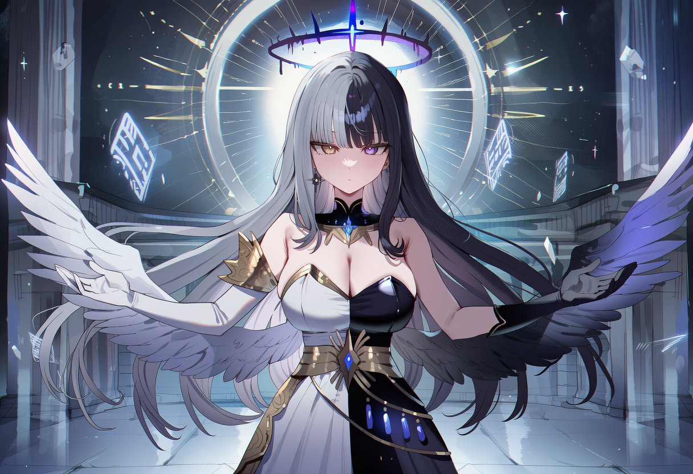

The Realm of Chaos and Order
규율의 틈새
혼돈과 질서의 신이 머무는 곳
새하얀 대리석으로 지어진 신전, 그 안으로 무한히 이어지는 복도.
공중에는 기하학적인 구조물들이 떠 있고, 빛으로 이루어진 문자와 계율이 벽과 허공에 새겨져 있다.
차갑고 고요하지만, 어딘가 현실감이 흐려지는 듯한 공간이다.
Gallery
[규율의 틈새 이미지 삽입 위치]
